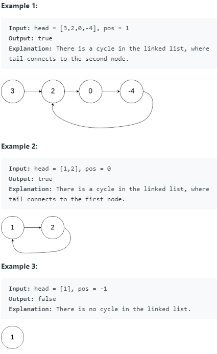
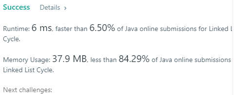
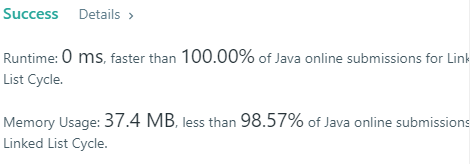
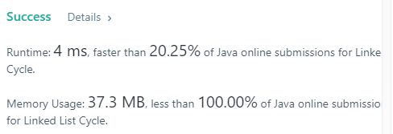

Given a linked list, determine if it has a cycle in it.
To represent a cycle in the given linked list, we use an integer pos which represents the position (0-indexed) in the linked list where tail connects to. If pos is -1, then there is no cycle in the linked list.

Solution by myself
Approach 1
- Hashmap
- put node into key is much faster than put node into value when using function of containsKey or containsValue
1
2
3
4
5
6
7
8
9
10
11
12
13
14
15
16
17
18public boolean hasCycle(ListNode head) {
Map <Integer, ListNode> map = new HashMap();
int i=0;
while(i>=0){
if(head==null||head.next==null)
return false;
if(map.containsValue(head)){
return true;
}
map.put(i, head);
head = head.next;
i++;
}
return false;
}
- put node into key is much faster than put node into value when using function of containsKey or containsValue

Solution from others
Approach 1 : 2 nodes trace
- node1 is move 1 step faster than node2 each time, they will meet eventually
1 | public boolean hasCycle(ListNode head) { |

Approach 2 : HashSet
1 | public boolean hasCycle(ListNode head) { |
